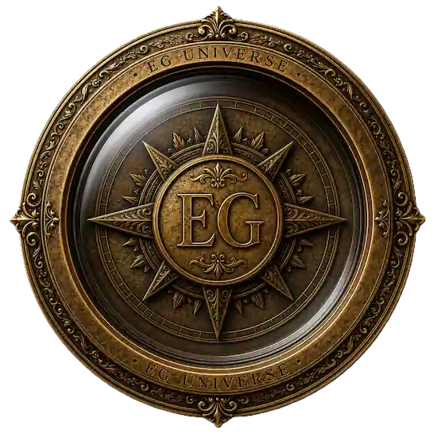

← 살롱으로

🧭
떠나기
🌍 다른 도시
›
✦ 다른 인물
›
보기
🏛 인물 장소
🏠 콩파뇽 집
관리
📍 좌표 편집
🌍 다른 도시
✦ 다른 인물
🏛 인물 장소
🏠 콩파뇽 집
📍 좌표 편집
📍
편집 모드
— 옮길 메종 핀을 누른 뒤, 그 집
지붕
을 클릭하세요
Constellatio
Ernest Hemingway
한 별의 다섯 착지 · 1899–1961
당신의 집으로 가는 길을 여는 중…
펜웨이파크
BOSTON
⚾ 경기 입장하기
대문을 클릭해 들어가세요
✎ 대문 고르기
✎ 엘리베이터 고르기
× 분더카머 떠나기
내 대문 고르기
×
maison 0628e